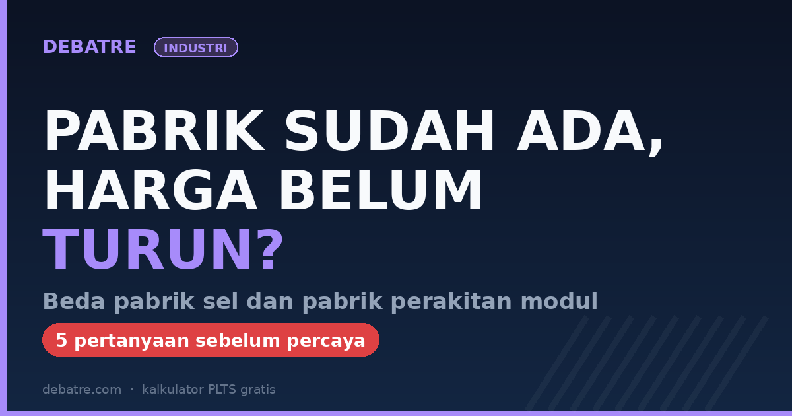
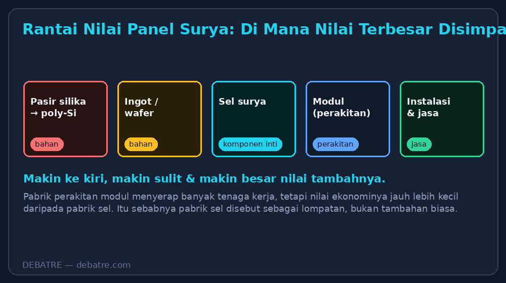

Pabrik Baterai & Panel Surya Baru: Cara Membacanya dengan Benar
Diperbarui 17 November 2026 | Waktu baca: 8 menit

Setiap kali ada berita “pabrik panel surya dan baterai akan dibangun di Indonesia”, pertanyaan yang paling wajar muncul adalah: kapan harga di toko turun? Jawabannya sering mengecewakan, bukan karena pabriknya tidak nyata, tapi karena letak pabrik itu di rantai nilai menentukan seberapa besar efeknya ke harga.
Termasuk untuk rencana investasi dari NQI (Naturals Quality Industries) bersama Hosen-X yang sempat diberitakan: yang perlu dinilai bukan besarnya angka investasi, melainkan tahap produksi mana yang akan dikerjakan di Indonesia.
Baca juga: Pabrik Baterai & Panel Surya Baru di Indonesia: Apa Artinya bagi Harga Baterai? — khusus soal harga baterai.
Empat tahap, satu rantai nilai

Panel surya bukan satu produk tunggal, melainkan hasil rantai panjang. Nilai terbesar — dan tingkat kesulitan tertinggi — ada di bagian hulu:
- • Polysilicon: bahan dasar dari pasir silika, butuh energi sangat besar dan fasilitas mahal. Hampir seluruh produksi dunia terkonsentrasi di sedikit negara.
- • Ingot dan wafer: silikon dimurnikan lalu dipotong menjadi lembaran tipis. Presisi dan peralatannya mahal.
- • Sel surya (cell): wafer diolah menjadi sel yang bisa menghasilkan listrik. Ini komponen termahal dalam satu panel.
- • Modul: sel disusun, dilaminasi, diberi frame dan junction box. Secara teknis ini tahap perakitan.
Pabrik perakitan modul menyerap banyak tenaga kerja dan terlihat besar secara fisik, tetapi nilai tambahnya jauh lebih kecil daripada pabrik sel. Karena itu, dalam diskusi industrialisasi, pabrik sel selalu disebut sebagai lompatan — sementara pabrik modul lebih tepat disebut perluasan.
Kenapa harga ritel belum ikut turun
Ada tiga alasan yang saling menguatkan:
1. Tahap produksinya belum menyentuh komponen termahal. Selama sel masih diimpor, harga panel dalam negeri tetap terikat harga sel dunia. Perakitan lokal hanya memotong sebagian kecil biaya.
2. Kapasitas awal selalu kecil dibanding pasar. Pabrik baru biasanya mulai dari kapasitas terbatas dan menyuplai segmen tertentu (proyek pemerintah, merek sendiri, atau ekspor) sebelum masuk pasar ritel luas.
3. Biaya non-produksi tetap ada. Distribusi, garansi, kurs, dan pajak tidak hilang hanya karena barang dirakit di dalam negeri. Sering komponen biaya ini justru lebih besar daripada selisih harga produksi.
Lima pertanyaan sebelum percaya sebuah pengumuman
Pengumuman investasi dan produksi nyata adalah dua hal berbeda. Untuk menilai sebuah berita pabrik, lima pertanyaan ini cukup untuk menyaring:
- • Tahap apa yang dibangun? Sel, wafer, atau hanya perakitan modul? Ini penentu terbesar dampaknya ke harga.
- • Sudah produksi atau masih ground breaking? Banyak pengumuman berhenti di upacara peletakan batu pertama.
- • Kapasitas berapa per tahun, dan untuk siapa? Kalau seluruh output untuk ekspor, harga domestik tidak terpengaruh.
- • Bahan bakunya dari mana? Kalau sel tetap impor, ketergantungan hanya berpindah tahap.
- • Ada komitmen TKDN yang mengikat? Tanpa kewajiban yang ditegakkan, pabrik bisa beroperasi tanpa menyentuh pasar lokal.
Dampak positifnya tetap nyata
Meski tidak langsung menurunkan harga ritel, keberadaan pabrik memberi manfaat yang tetap berarti: lapangan kerja, transfer keterampilan teknis, pengurangan ketergantungan pada satu jalur impor, dan nilai tambah ekspor. Untuk jangka panjang, kemampuan memproduksi sendiri adalah bentuk ketahanan — ketika jalur impor terganggu, pasokan dalam negeri tetap ada.
Solusi praktis bagi pembeli
- • Jangan menunda pemasangan menunggu harga turun. Selisih harga yang diharapkan biasanya lebih kecil daripada penghematan listrik yang hilang selama menunggu.
- • Fokus pada spesifikasi, bukan asal pabrik. Daya, tipe sel, garansi, dan mutu komponen menentukan pengalaman pemakaian jauh lebih besar daripada negara perakitan.
- • Hitung kebutuhan lebih dulu. Ukuran yang tepat menghemat lebih banyak uang daripada mengejar diskon pada ukuran yang salah. Gunakan kalkulator DEBATRE.
- • Perhatikan garansi baterai. Untuk sistem dengan penyimpanan, biaya baterai lebih besar daripada panel; kejelasan garansi lebih penting daripada klaim “produksi lokal”.
Kesimpulan: pabrik baterai dan panel di Indonesia adalah kabar baik untuk ketahanan pasokan dan lapangan kerja. Tapi efeknya ke harga yang dibayar pembeli hari ini kecil, karena bagian termahal — sel dan wafer — masih diimpor dan kapasitas awal terbatas. Yang perlu dicermati dari setiap pengumuman: tahap produksinya, status nyatanya di lapangan, dan untuk pasar mana outputnya dialokasikan.
Sumber & rujukan
- • Kementerian Perindustrian — kebijakan TKDN dan peta jalan industri sel surya — kemenperin.go.id
- • Kementerian Investasi / BKPM — data realisasi investasi sektor energi terbarukan — bkpm.go.id
- • Kementerian ESDM — aturan TKDN komponen PLTS — esdm.go.id
- • International Energy Agency — laporan rantai pasok manufaktur surya global — iea.org
Artikel ini tidak mengonfirmasi nilai investasi atau jadwal operasi proyek tertentu. Untuk keputusan bisnis, selalu rujuk pengumuman resmi perusahaan dan dokumen perizinan yang berlaku.